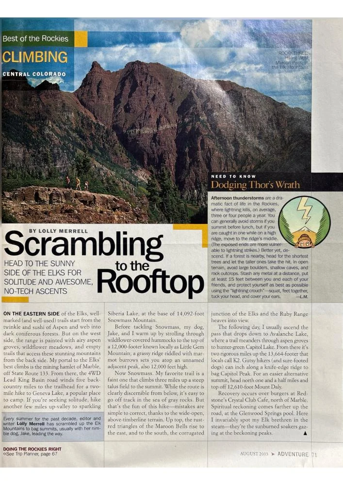

Scrambling to the Rooftop

An approach to Colorado’s Elk Mountains from the quieter side: Marble, alpine lakes, wildflower meadows, and high summits.
View PDF here »PDF · 1.6 MB← Back to Travel and Adventure
An approach to Colorado’s Elk Mountains from the quieter side: Marble, alpine lakes, wildflower meadows, and high summits.
View PDF here »PDF · 1.6 MB← Back to Travel and Adventure